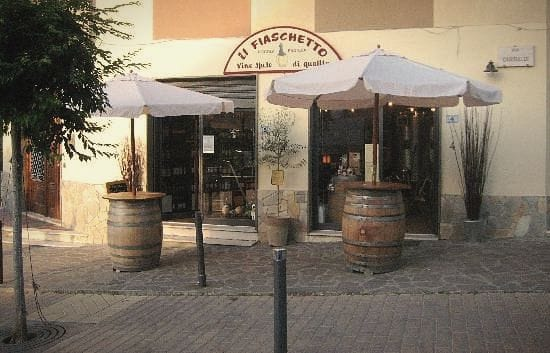
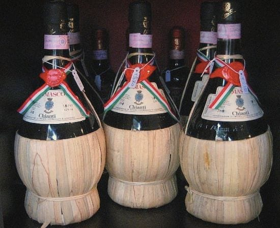
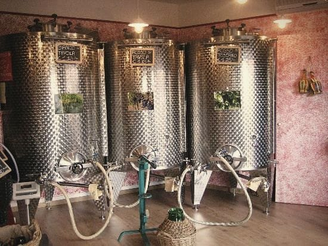
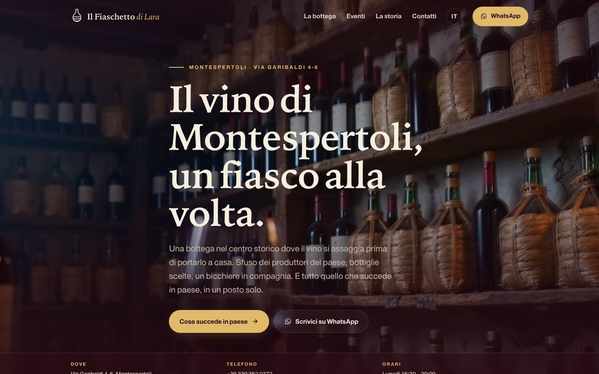
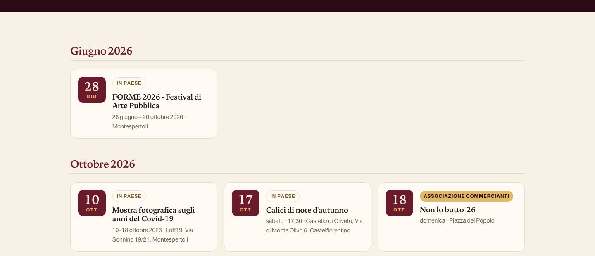
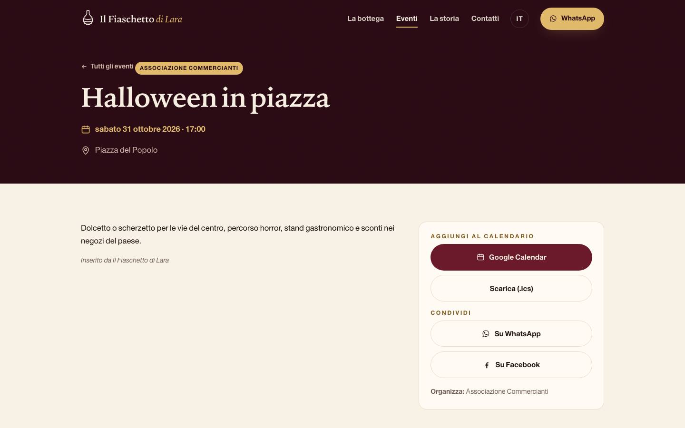
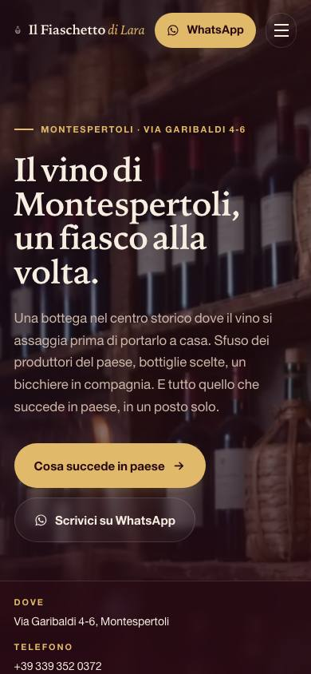

L'abbiamo costruito guardando la bottega, i tuoi post, gli eventi che metti in piedi in paese. È tuo: niente da imparare, niente password, niente da pagare. Qui c'è cosa c'è dentro e come tenerlo vivo.
Inquadra con il telefono per aprirlo. Lo stesso codice lo puoi stampare e mettere in vetrina o sui tavoli.

La versione inglese è a fiaschetto-di-lara.netlify.app/en/: stessi contenuti, pensati per chi arriva da fuori.
Il sito legge un foglio Google. Ogni riga è un evento. Tu scrivi, e in pochi minuti è online, in italiano e in inglese.
«Eventi Il Fiaschetto», nel tuo Google. Dal telefono o dal computer, fa lo stesso.
Titolo e data bastano. Il resto lo aggiungi se vuoi.
Il foglio si salva da solo mentre scrivi.
Il sito controlla il foglio, si accorge della novità e si aggiorna.
| Colonna | Cosa scrivere | Esempio |
|---|---|---|
| Titolo * | il nome dell'evento | Cena d'Estate in via Garibaldi |
| Data * | giorno/mese/anno | 24/06/2027 |
| Ora | a che ora comincia | 20:00 |
| Data fine | solo se dura più giorni | 26/06/2027 |
| Ora fine | a che ora finisce | 23:30 |
| Luogo | dove | Via Garibaldi, Montespertoli |
| Descrizione | due righe, come le scriveresti su Facebook | Tavoli in strada, musica dal vivo. Prenota al 339 352 0372. |
| Link | un indirizzo web, se c'è | https://… |
| Foto | link diretto a un'immagine, o il link «condividi» di una foto su Google Drive resa pubblica | https://drive.google.com/file/d/… |
| Chi organizza | la bottega, l'Associazione o chi altro | Il Fiaschetto |
| Titolo in inglese Descrizione in inglese | solo se vuoi dirla tu: se li lasci vuoti, il sito traduce da solo |
* Obbligatorie. Le righe senza titolo o senza data valida vengono ignorate, senza fare danni.
Poche, e lavorano tutte per te.
Scrivi Fiaschetto e l'evento ha l'etichetta rossa della bottega. Scrivi Commercianti o Artigiani e ha quella color paglia dell'Associazione. Chiunque altro (Pro Loco, Comune, un'altra associazione) ha «In paese», e il nome che hai scritto compare accanto alla data.
Il giorno dopo un evento, l'evento non c'è più. Non devi cancellare niente: il foglio può restare lungo quanto vuoi.
Gli eventi del calendario di visitmontespertoli.it entrano nel sito ogni mattina. Se scrivi nel foglio lo stesso evento, vince la tua versione.
Titolo e descrizione vengono tradotti per i visitatori stranieri. Se vuoi dirla tu, usa le due colonne in inglese: le tue parole vincono.
Con un link da condividere su WhatsApp e Facebook, l'anteprima giusta, e il pulsante per metterlo nel calendario del telefono.
Dal momento in cui scrivi nel foglio al sito aggiornato passano al massimo sei minuti. Il calendario del Comune si aggiorna una volta al giorno, la mattina presto.


A sinistra il calendario del paese; a destra la pagina di un evento, con «Aggiungi al calendario» e «Condividi».
In fondo al sito c'è un modulo: chi vuole un regalo, organizza una festa, ha un evento da far conoscere o cerca un consiglio sul vino, lascia nome, recapito e due righe. Il messaggio ti arriva per email, a lara7102@icloud.com.
Il pulsante in alto, su ogni pagina, apre una chat con il 339 352 0372. È il modo più veloce per chi ti scrive dal telefono.
Se cambiano, anche solo per le feste, diccelo: li aggiorniamo in giornata, e Google li legge dal sito.

Il sito sul telefono: è lì che lo aprirà quasi tutta Montespertoli.
Un testo, una foto, un orario, un prezzo: scrivi a Daniel. Niente pannelli, niente password, niente da aggiornare: ci pensiamo noi, di solito in giornata.
Ti piace? Ne facciamo uno anche per chi te lo chiede in bottega: basta un messaggio.